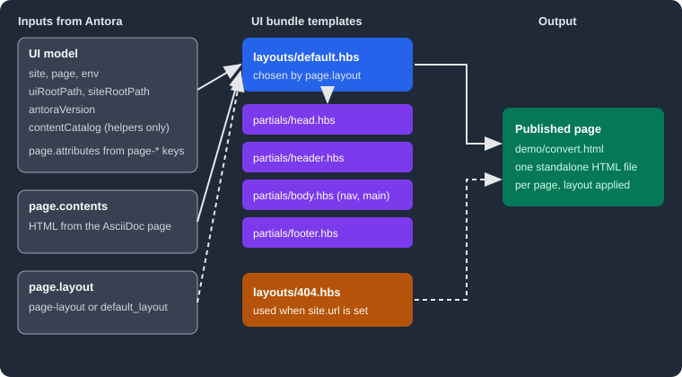

Templates and UI Model
|
This content was generated with the assistance of AI and should be verified against the official documentation before being relied on in production. |
This page was written against Antora 3.2.1 and the Antora Default UI (repository checkout 0e38223, which has no release tags), and checked on 2026-10-26. An Antora UI bundle contains Handlebars templates that wrap the HTML Antora produces from each AsciiDoc page in a complete web page. This page explains the two kinds of template (layouts and partials), the model of data they can read, how a page chooses its layout, and how to add a layout of your own. Writing helpers, styling and packaging are covered on the sibling pages listed in the references of the UI overview.

The figure shows the flow described below: Antora builds the UI model and the converted page contents, picks a layout by
page.layout, the layout pulls in partials, and the result is one standalone HTML file per page.
What templates do and why they exist
Antora converts every AsciiDoc page to an embeddable HTML fragment (the article body). A fragment is not yet a web page: it has no head, no navigation, no footer. The UI bundle supplies that frame. Keeping the frame in templates, separate from the content, means the same documentation can be re-skinned by swapping one bundle (see Building a custom UI) without touching a single page.
Antora uses Handlebars for templates. Handlebars templates are "logic-less": they are HTML with
mustache tags that insert values from a model. Some conditionals and loops exist ({{#if}}, {{#each}}, {{#with}}), but
real computation belongs in helpers (see Helpers).
The template syntax in short:
-
{{page.title}}inserts a value and escapes it for HTML.{{{page.title}}}(triple mustaches) inserts it as is. Use triple mustaches for values that already contain HTML, such aspage.titleandpage.contents, and for URLs. -
{{> head}}invokes the partial namedheadand inserts its output. It is not a model reference. -
{{#if page.home}},{{#with page.next}}and{{#each site.components}}open block helpers that end with a matching closing tag. Inside{{#with}}and{{#each}}the current item isthis, and@rootstill reaches the top of the model. -
A mustache preceded by a backslash is disabled, so a backslash right before the opening mustaches silently breaks it. Use forward slashes.
-
{{!-- comment --}}is a template comment that never reaches the output.
The two kinds of template
The bundle loader sorts every file by its first path segment. A file under layouts/ is a layout, a file under partials/ is a
partial, a file under helpers/ is a helper, and everything else is a static asset published under the UI output directory
(default _). The template name is the file name without its extension (the stem), so layouts/default.hbs is the layout
default and partials/head.hbs is the partial head. Partials are registered by stem only, so two partials in different
sub-directories with the same file name would collide.
Layouts
A layout is the root template of a page: it produces the whole HTML document. Antora compiles each layout once and runs it for every page that selects it. The Default UI has two layouts:
<!DOCTYPE html>
<html lang="en">
<head>
{{> head defaultPageTitle='Untitled'}}
</head>
<body class="article{{#with (or page.attributes.role page.role)}} {{{this}}}{{/with}}">
{{> header}}
{{> body}}
{{> footer}}
</body>
</html>Source: Antora Default UI: default.hbs
The layout is short on purpose. It sets the document skeleton, passes defaultPageTitle into the head partial as a hash
argument, adds the page role as a CSS class on <body>, and delegates every region to a partial. The 404 layout is nearly
identical, with defaultPageTitle='Page Not Found' and <body class="status-404">.
Partials
A partial is a reusable fragment included by a layout or another partial. The Default UI splits a page into regions, each in its own file, which keeps each file small enough to override on its own (see Supplemental UI). The partials and what they render:
| Partial | Purpose |
|---|---|
|
Calls, in order, |
|
Empty hook placed at the start of |
|
The |
|
Charset and viewport meta tags, canonical link, previous and next links, description, keywords and the generator meta tag. |
|
The link to |
|
Empty hooks for extra meta tags and favicons. |
|
Hook for scripts in |
|
Calls |
|
Hooks for the start of the page. |
|
The page body: the navigation ( |
|
The left navigation panels, the component explorer and the toggle button. |
|
The main region: |
|
The strip above the article: nav toggle, home link, breadcrumbs, version menu and the "Edit this Page" link. |
|
The |
|
The right-hand contents sidebar and the previous and next links. |
|
Calls |
|
The footer markup. |
|
The site script, the highlight script, and |
Source: Antora Default UI: partials
Many of these are deliberate empty hooks (head-prelude, head-meta, head-scripts, header-content). A site that needs
extra markup overrides one hook instead of copying a large partial. A partial is invoked with the same context as its caller, so
page, site and the other variables are visible everywhere, and a hash argument such as defaultPageTitle becomes a variable
inside the partial.
Two partials matter for the integrations described on other pages. footer-scripts includes a partial named search-scripts
only when env.SITE_SEARCH_PROVIDER is set, and the Default UI does not contain a search-scripts file of its own: a search
extension supplies it (see
Search and analytics integration). Invoking a partial
that does not exist is a build error, as shown under "Errors and diagnostics".
Which files are required
A UI bundle with a custom set of templates needs very little. Antora requires exactly one layout for a page to render: the
default layout (layouts/default.hbs, or the layout named by ui.default_layout). The 404 layout is required only when the
playbook sets site.url, because Antora builds 404.html only then. Both facts were checked by removing the files from an
unzipped bundle and running Antora 3.2.1; the results are under "Errors and diagnostics". Partials and helpers are optional:
a layout can be a single self-contained file.
The UI model
Every layout and partial reads from one object, the UI model. Antora builds it for each page: a base part shared by all pages,
plus a page object and two path variables computed per page.
Top-level variables
| Variable | Description |
|---|---|
|
Site-wide information, described below. |
|
Information about the page being composed, described below. |
|
The environment variables of the Antora process ( |
|
The relative path from the current page to the root of the published site. In the 404 page it is root-relative instead, so the page keeps working at any depth. |
|
The relative path from the current page to the UI output directory ( |
|
The version of Antora that built the site, for example 3.2.1. |
|
A proxy over Antora’s content catalog (components, versions, pages and resources). The official page states it should only be used from a UI helper, never directly from a template. |
The value of uiRootPath is easy to check. In the scratch site built for this page, landing.html printed
ui-root=../_ site-root=.. because the page sits one directory below the site root.
The site object
| Property | Description |
|---|---|
|
The site title from |
|
The base URL from the playbook, when set. It includes the site path. |
|
The path part of |
|
The URL of the start page, when a start page is defined. |
|
A map of every component, keyed by component name and sorted by title. Each has its versions and their navigation. |
|
A copy of the playbook |
|
The root-relative URL of the UI output directory. |
|
The default layout name, |
The page object
| Property | Description |
|---|---|
|
The page title as HTML (may contain inline elements and character references, hence triple mustaches). |
|
The converted article as an HTML fragment. |
|
The layout name for this page: the |
|
Every AsciiDoc attribute starting with |
|
The matching header attributes of the page. |
|
The |
|
The root-relative URL, and the absolute canonical URL (only when |
|
The component, its version record, and the module name. |
|
All versions of this page across component versions, present only when the component has more than one. |
|
The navigation tree of the component version and the position of the page in it. |
|
True when this is the start page of the site. |
|
The page path relative to its module |
|
The web editor URL and, for a local worktree, the |
|
The underlying virtual file of the page, new in Antora 3.2. |
The release notes for Antora 3.2 list page.file as a new UI model property, while the Default UI templates page does not
document it (it documents page.fileUri). It is the virtual file Antora keeps for the page, with the original source path
under file.src, the published URL under file.pub and the AsciiDoc document under file.asciidoc. Printing it from a layout
with {{log page.file.src}} produced, in the scratch site:
{
path: 'modules/ROOT/pages/landing.adoc',
basename: 'landing.adoc',
stem: 'landing',
extname: '.adoc',
origin: { type: 'git', reftype: 'branch', refname: 'main', branch: 'main', startPath: 'docs', ... },
family: 'page',
relative: 'landing.adoc',
module: 'ROOT',
moduleRootPath: '..',
component: 'demo',
version: '',
mediaType: 'text/asciidoc'
}The listing is shortened: the real output also contained absolute paths and URIs, which are omitted here. Source: Antora docs: What’s new in Antora 3.2
The model is described by the Default UI documentation as not final, so treat properties that only appear in the source (like
page.file internals) as less stable than the documented ones. To see exactly what a template can read, print it:
{{log page}} writes the object to the console in the same format as Node.js console.log.
Selecting a layout
A page chooses its layout through the page-layout attribute, and a site chooses a default through the playbook:
-
:page-layout: namein the page header setspage.layouttonamefor that page. Antora looks uplayouts/name.hbs. -
ui.default_layoutin the playbook sets the layout used by every page that does not setpage-layout. Without it the default isdefault. -
The 404 page ignores both and always uses
layouts/404.hbs.
Resolution follows a fixed order, implemented in the page composer:
An unknown page-layout is therefore only a warning, not an error, and the page silently looks like the rest of the site.
The warning is the only hint, so read the build log.
Worked example: a layout for Pocket Units reference pages
The running example is Pocket Units, a small units-conversion library. Its reference pages should show a status banner above the article, driven by a page attribute, while every other page keeps the standard look. The component, scratch Git repository and unzipped Default UI bundle used here were built on 2026-10-26 with Antora 3.2.1.
The page picks the new layout and supplies the banner text. The attribute page-status becomes page.attributes.status:
= Convert units
:page-layout: reference
:page-status: preview
Convert a value from one unit to another.The layout is a copy of default.hbs with the body partial inlined, so the banner can be placed inside the content region.
It reuses every other partial:
<!DOCTYPE html>
<html lang="en">
<head>
{{> head defaultPageTitle='Untitled'}}
</head>
<body class="article{{#with (or page.attributes.role page.role)}} {{{this}}}{{/with}}">
{{> header}}
<div class="body">
{{> nav}}
<main class="article">
{{> toolbar}}
<div class="content">
{{#with page.attributes.status}}
<p class="status-banner">Status: {{this}}</p>
{{/with}}
{{> toc}}
{{> article}}
</div>
</main>
</div>
{{> footer}}
</body>
</html>Running npx antora playbook.yml with a local, extracted bundle directory (ui.bundle.url accepts one) built the site without
warnings. The generated convert.html contains the banner, and the standard pages still use default.hbs:
$ grep -n "status-banner" out/demo/convert.html
102: <p class="status-banner">Status: preview</p>
$ grep -n "<body" out/demo/index.html out/404.html
out/demo/index.html:11: <body class="article home">
out/404.html:10: <body class="status-404">The banner needs a style rule, which belongs in the UI stylesheet (see Stylesheets, fonts and static files). A site that wants a layout for every page sets it once in the playbook:
ui:
bundle:
url: ./ui-bundle.zip
default_layout: referenceThe default_layout: landing variant of this was run against a bundle with a landing.hbs layout and every page, including
the start page, used it; page.layout printed landing and site.ui.defaultLayout printed landing.
Errors and diagnostics
These messages were produced by Antora 3.2.1 against an unzipped Default UI bundle that was modified as described.
| Situation | Result |
|---|---|
|
Fatal: |
|
Build succeeds. No |
|
Fatal: |
|
Warning: |
A layout includes |
Fatal: |
Handlebars runtime error inside a partial |
Fatal. According to the page composer source, the message ends with the template path, in the form |
Add --stacktrace to the Antora command to see the full cause of a fatal error.
Page attributes the Default UI reads
The layouts above read page.attributes, and the Default UI uses a handful of attributes. They are documented on the template
customization page, and they are the first things to check before writing a new layout:
| Attribute | Effect in the Default UI |
|---|---|
|
Space-separated classes added to |
|
Enables previous and next links, set in the playbook under |
|
Heading of the contents sidebar (default |
|
Heading depth shown in the sidebar (default 2). |
Pitfalls and version notes
-
A remote bundle is cached, so a changed template is not seen until the bundle is fetched again. The caching rules and
snapshot: trueare in Publishing a UI bundle. -
contentCatalogis only meant for helpers. If a layout needs data from another page, such as its title, resolve it with a helper likeresolvePage, which is covered on the Helpers page. -
Use
relativizefor every internal link anduiRootPathfor every UI asset so a built site works from any directory or from a file system. -
A template error points to the template, not to a line in your source: the partial name is derived from the failing call.
-
A layout that forgets the
search-inputorsearch-scriptswiring loses search silently. Keep the pieces fromheader.hbsandfooter-scripts.hbswhen you copy a layout. -
The model documentation says the model may change.
page.fileis new in 3.2, so a UI that reads it will not work on older Antora versions. -
Layout names are file stems:
layouts/Reference.hbsand:page-layout: referencedo not match on case-sensitive file systems. Keep layout names lowercase.